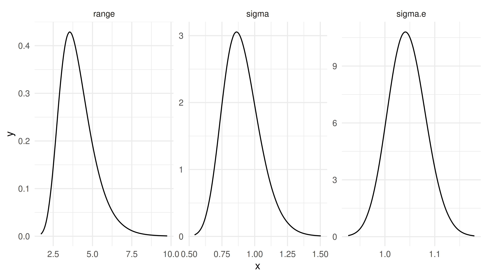
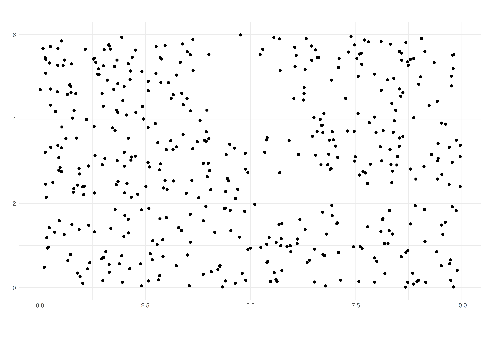

A barrier model illustration
Elias T Krainski
Created in March, 2023. Last update: Tue 01 Aug, 2023
Source:vignettes/web/barrierExample.Rmd
barrierExample.RmdAbstract
In this tutorial we illustrate a new implementation of the model proposed in Bakka et al. (2019). It consider the problem of modeling over a spatial domain accounting for physical barriers. The original implementation is illustrated in this tutorial. The re-implementation consider a new (faster) computational method available in the INLA package. See details at the end of this vignette to update old working code to use this new implementation.
Introduction
Suppose that there is a phenomena that varies over a spatial domain. Models usually consider correlation between observations made. Considering a pair of observations, the correlation is usually specified as a function of the distance between the location sites from where these observations were collected. If there is a barrier in the spatial domain, this correlation for a pair of observations taken from sites in different sides of the barrier shall consider the barrier. In resume, it should no longer be just a function of the distance. Basically, the correlation between points in two different sides of the barrier should decay faster (than the usual) to zero and “does not cross the domain”.
In order to illustrate the problem, let us define a rectangle as our spatial domain:
rxy <- c(10, 6)
r <- mean(rxy)
bb <- rbind(
c(0, 1)*rxy[1],
c(0, 1)*rxy[2])
domain.xy <- cbind(
c(0, 1, 1, 0, 0) * rxy[1],
c(0, 0, 1, 1, 0) * rxy[2])We will now set the barrier as the two polygons defined as follows
barrier1 <- cbind(
cos(seq(0, 2*pi, length=50)) * 0.7 + 0.50 * rxy[1],
sin(seq(0, 2*pi, length=50)) * 1.0 + 0.75 * rxy[2])
barrier2 <- cbind(
c(0.50, 1.50, 1.50, 0.50, 0.50) * rxy[1],
c(0.33, 0.33, 0.40, 0.40, 0.33) * rxy[2])Define the objects using the package:
library(sf)
#> Linking to GEOS 3.10.2, GDAL 3.4.1, PROJ 8.2.1; sf_use_s2() is TRUE
domain <- st_sfc(st_polygon(list(domain.xy)))
barriers <- st_sfc(st_multipolygon(
list(st_polygon(list(barrier1)),
st_polygon(list(barrier2)))))We can visualize these polygons in order to make the problem clear:
library(ggplot2)
gg0 <- ggplot() +
xlab("") + ylab("") +
theme_minimal() + coord_fixed()
gg0 + xlim(bb[1, ]) +
geom_sf(data = domain, fill = "blue") +
geom_sf(data = barriers, fill = "gray")
#> Coordinate system already present. Adding new coordinate system, which will
#> replace the existing one.The problem is to model data in both sides of the barrier considering that the correlation between then should account for the barrier. The proposed method in Bakka et al. (2019) models the entire domain, including the barrier. To deal with the barrier, the correlation range is set to be reasonable shorter over the barrier domain than the one at the domain of interest. This idea is simple and does not add any parameter in the usual stationary model. Furthermore, it can be implemented with any inferential method.
In Bakka et al. (2019), the proposed method consider the Stochastic Partial Differential Equations - SPDE approach proposed in Lindgren, Rue, and Lindström (2011). The implementation illustrated in this tutorial deals with a discretization of the domain. The discretization should be considered with some care. The fraction fixed for the analysis interplay with the width of the barrier. One should choose a small enough fraction, see details in Bakka et al. (2019).
We first load the other packages that will be used in this tutorial.
library(INLA)
#> Loading required package: Matrix
#> Loading required package: sp
#> The legacy packages maptools, rgdal, and rgeos, underpinning the sp package,
#> which was just loaded, will retire in October 2023.
#> Please refer to R-spatial evolution reports for details, especially
#> https://r-spatial.org/r/2023/05/15/evolution4.html.
#> It may be desirable to make the sf package available;
#> package maintainers should consider adding sf to Suggests:.
#> The sp package is now running under evolution status 2
#> (status 2 uses the sf package in place of rgdal)
#> This is INLA_23.06.29 built 2023-06-30 04:18:35 UTC.
#> - See www.r-inla.org/contact-us for how to get help.
library(INLAspacetime)
library(inlabru)
library(patchwork)Model definition and discretization
Let us consider that there is an underlying random field over the specified domain. This random field will be discretized using the mesh so that a precision matrix is defined for the distribution at the mesh nodes. We will define the barrier model as proposed in Bakka et al. (2019) which make use of a triangulation.
Mesh and triangles
The solution consider a discretization of the spatial domain and the simplest one is using triangles. Therefore we start with the following mesh made up of small triangles in the domain and bigger around it.
mesh <- inla.mesh.2d(
loc.domain = domain.xy,
max.edge = c(0.03, 0.1) * r,
offset = c(0.1, 0.3) * r,
cutoff = 0.01 * r)
mesh$n
#> [1] 4364The solution needs the triangles inside the barrier domain to be identified. For each triangle center we check if it is inside or not of the barrier domain and and create a vector to identify to which domain is each triangle center inside
triBarrier <- unlist(fm_contains(
x = barriers,
y = mesh,
type = "centroid"))We can visualize the mesh and color the triangle centers using the ggplot methods from the inlabru package
triCenters.xy <- cbind(
mesh$loc[mesh$graph$tv[,1], 1:2] +
mesh$loc[mesh$graph$tv[,2], 1:2] +
mesh$loc[mesh$graph$tv[,3], 1:2])/3
gg0 +
gg(mesh) +
geom_point(aes(
x = triCenters.xy[triBarrier, 1],
y = triCenters.xy[triBarrier, 2])) 
Notice that the mesh goes beyond the domain area including a boundary extension. Then we also had defined the barrier so that it is also defined in this boundary. Therefore, when building the model over this discretization, the barrier will be well defined and the behavior of the process will be as intended.
Precision matrix
The parameters in this model are the range and the marginal variance, We also define the range parameter in the barrier so that the method works. We consider the range for the barrier as a fraction of the range over the domain. We just use half of the average rectangle edges as the range in the domain and 10% of it in the barrier.
sigma <- 1
(ranges <- r * c(0.5, 0.05))
#> [1] 4.0 0.4We now have to compute the Finite Element matrices needed for the model discretization, as detailed in Bakka et al. (2019).
bfem <- mesh2fem.barrier(mesh, triBarrier)We now build the precision matrix with
Q <- inla.barrier.q(bfem, ranges = ranges, sigma = sigma)Correlation
We can use the discretized model to compute correlation between pairs of points in order to check the properties of the model. Let us define a function that computes the correlation from a given set of location to each mesh node location.
localCorrel <- function(locs, mesh, Q) {
nl <- nrow(locs)
ii <- sapply(1:nl, function(i)
which.min(rowSums(sweep(
mesh$loc[, 1:ncol(locs)], 2, locs[i, ], "-")^2)))
b <- matrix(0, nrow(Q), nl)
for(i in 1:nl)
b[ii[i], i] <- 1
cc <- inla.qsolve(Q, b)
s <- sqrt(diag(inla.qinv(Q)))
for(i in 1:nl)
cc[, i] <- cc[, i] / (s * s[ii[i]])
return(drop(cc))
}Consider a set of locations and compute the correlations with
locs <- cbind(c(0.4, 0.6, 0.7, 0.5) * rxy[1],
c(0.7, 0.6, 0.3, 0.5) * rxy[2])
mcorrels <- localCorrel(locs, mesh, Q)
dim(mcorrels)
#> [1] 4364 4We have the correlation from each mesh node to each of the specified locations. We would like to visualize it as an image so that we have these correlation from the location to “everywhere”. Let us build a projector to project any vector from the mesh nodes to a fine grid and projected with
pgrid <- inla.mesh.projector(
mesh,
xlim = bb[1, ],
ylim = bb[2, ],
dims = round(500 * rxy/r))
gcorrels <- as.matrix(inla.mesh.project(
pgrid, field = mcorrels
))We can now create a data.frame with the expanded
coordinates of the pixels
grid.df <- data.frame(
x = rep(pgrid$x, times = length(pgrid$y)),
y = rep(pgrid$y, each = length(pgrid$x)))The correlations can be projected and prepared for plotting with
ggcorrels <- do.call(
rbind,
lapply(1:4, function(l)
data.frame(grid.df,
loc = paste(sprintf("%1.1f", locs[l, 1]),
sprintf("%1.1f", locs[l, 2]), sep = ", "),
correlation = gcorrels[, l])))In order to help the visualization of correlations, we will dropped the pixels with small correlations, less than \(0.1\). We can now visualize the images with
gg0 +
geom_raster(
data = ggcorrels[ggcorrels$correlation>0.1, ],
mapping = aes(x = x, y = y, fill = correlation)) +
facet_wrap(~ loc) +
add.b0 + gg.add ## look to the appendix for the code for this
Notice that the model is also defined in the barrier domain. Therefore we can do computations at the barrier. We visualized the correlation over the barriers as well, and added the barrier borders, so that we can see the action of the short spatial range over the barriers. This visual inspection helps to verify if the short range over the barrier domain was set small enough.
Data simulation
We consider that the random field is observed with noise. We first sample from the random field distribution.
A random field sample
There are several algorithms to sample from a random field specified over a continuous domain without barriers. We will use the already defined precision matrix to draw a sample at the mesh nodes with
u <- inla.qsample(1, Q, seed = 1)[,1]
#> Warning in inla.qsample(1, Q, seed = 1): Since 'seed!=0', parallel model is
#> disabled and serial model is selectedThese values sampled at the mesh nodes can be projected to a set of small pixels for visualization purpose with
ugrid.sim <- inla.mesh.project(pgrid, field = u)We can now visualize the projected simulated values at the small pixels, inclusive those values in the barriers.
grid.df$u <- as.vector(ugrid.sim)
gg0 +
geom_raster(
data = grid.df,
aes(x = x, y = y, fill = u)) +
add.b0 + gg.add ## look to the appendix for the code for this
The visualization of the simulated process over the barrier allows a visual inspection of the model property. The process in different sides of the barriers seen to be independent, as illustrated by the correlation plots.
Sampling a set of observations
We define a initial set of locations to consider that we observe the field at these locations. We start with a set of locations chosen completely at random in the rectangle domain, including a barrier part
Then we check which of these is inside the barrier
The locations to form the data consider only the locations in the desired domain and outside the barrier
dataset <- data.frame(
x = xy0[ii, 1], y = xy0[ii, 2])
(n <- nrow(dataset))
#> [1] 464To simulate the outcome, we project the field to these locations, add an intercept and some random noise
sigma.e <- 1
set.seed(3)
dataset$outcome <-
drop(inla.mesh.project(
mesh,
loc = cbind(dataset$x, dataset$y),
field = u)) +
10 + rnorm(n, 0.0, sigma.e)Model fitting
Here we illustrate the use of the function in
INLAspacetime to implement the barrier model as in
Bakka et al. (2019). This implementation
consider the cgeneric computational method that is useful
to implement new models with INLA. This method allows
the computations in INLA to take full advantage of
parallel computations, achieving shorter computation time than with the
original implementation.
We define the model object with
bmodel <- barrierModel.define(
mesh = mesh,
barrier.triangles = triBarrier,
prior.range = c(1, 0.01), ## P(range < 1) = 0.01
prior.sigma = c(1, 0.01), ## P(sigma > 1) = 0.01
range.fraction = 0.1)We use the model formula in the inlabru way, where
the field will be the name for the spatial effect:
model <- outcome ~ Intercept(1) +
field(cbind(x, y), model = bmodel)#> Warning in inla.model.properties.generic(inla.trim.family(model), mm[names(mm) == : Model 'cgeneric' in section 'latent' is marked as 'experimental'; changes may appear at any time.
#> Use this model with extra care!!! Further warnings are disabled.The inlabru main function can be supplied with only the model formula, the data and the family, as follows
result <- bru(
model, dataset, family = "gaussian")Results
We can see the summary for the posterior marginal distribution for the intercept with
result$summary.fix
#> mean sd 0.025quant 0.5quant 0.975quant mode
#> Intercept 10.11299 0.4101878 9.306188 10.10424 10.96949 10.10519
#> kld
#> Intercept 8.663504e-07For the hyper-parameters the computations were performed in an internal scale. That is log of range and log(\(\sigma\)), and \(\log(1/\sigma_e^2)\). However, we can transform each of the hyper-parameters from the internal marginal scale to its scale with
pmarginals <-
list(
data.frame(
param = "sigma.e",
inla.tmarginal(
function(x) exp(-x/2),
result$internal.marginals.hyperpar[[1]])),
data.frame(
param = "range",
inla.tmarginal(
function(x) exp(x),
result$internal.marginals.hyperpar[[2]])),
data.frame(
param = "sigma",
inla.tmarginal(
function(x) exp(x),
result$internal.marginals.hyperpar[[3]]))
)From these transformed posterior marginal distributions we can extract a summary to compare with the values used to sample the data:
rbind(true = c(sigma.e = sigma.e, range = ranges[1], sigma = 1),
sapply(pmarginals, function(m)
unlist(inla.zmarginal(m[, -1], TRUE))[1:2]))
#> sigma.e range sigma
#> true 1.00000000 4.000000 1.0000000
#> mean 1.04428634 4.041961 0.9013457
#> sd 0.03813044 1.078826 0.1393268We can also visualize these these posterior marginal distributions with
ggplot(do.call(rbind, pmarginals)) +
geom_line(aes(x=x, y=y)) +
facet_wrap(~param, scales = "free") +
theme_minimal()
The fitted field
We can visualize summaries from the fitted field. The posterior mean and the standard deviation can be projected into small pixels and added to the raster data with
grid.df$u.mean <- as.vector(
inla.mesh.project(
pgrid,
result$summary.random$field$mean))
grid.df$u.sd <- as.vector(
inla.mesh.project(
pgrid,
result$summary.random$field$sd))To help the visualization, we will filter the grid pixels considering the barriers.
gInBarrier <-
(splancs::inout(cbind(grid.df$x, grid.df$y), barrier1)) |
(splancs::inout(cbind(grid.df$x, grid.df$y), barrier2))We can now visualize the posterior mean with
gg0 +
geom_raster(
data = grid.df[!gInBarrier, ],
aes(x = x, y = y, fill = u.mean)) +
gg.add ## look to the appendix for the code for this
The estimated field, considering the posterior mean shown, exhibits a different pattern in each side of the barrier, particularly far from its tip. Therefore we successfully accounted for the barrier in the model. See this tutorial for details and how to visualize the implied correlation between two points.
Similarly, we can plot the posterior standard deviation of the field, and the data locations used to estimate the model. This has lower values around more densely sampled locations and higher values otherwise. The highest are near the boundaries, including the boundary at the barriers, and far from observed locations.
gg0 +
geom_raster(
data = grid.df[!gInBarrier, ],
aes(x = x, y = y, fill = u.sd)) +
geom_point(data = dataset, aes(x = x, y = y)) +
gg.add ## look to the appendix for the code for this
Appendix A: adapting old code
To adapt code based in this tutorial, one should consider that there are two new functions implemented, as detailed bellow:
| Old | New |
|---|---|
| inla.barrier.fem() | mesh2fem.barrier() |
| inla.barrier.pcmatern() | barrierModel.define() |
The arguments in the new functions have the same names as in the old ones. The new function used to define the model has additional arguments. See the help of this function for details.
Appendix B: ggplot reused code
The additional ggplot2 code used
gg.add <- list(
scale_fill_distiller(
type = "div",
palette = "RdBu",
na.value = "transparent")
)
add.b0 <- list(
geom_polygon(
mapping = aes(x, y),
data = data.frame(
x = pmin(barrier1[,1], bb[1, 2]),
y = pmin(barrier1[,2], bb[2, 2])
), colour = "black",
fill = gray(0.9, 0.5)), ##"transparent"),
geom_polygon(
mapping = aes(x, y),
data = data.frame(
x = pmin(barrier2[,1], bb[1, 2]),
y = pmin(barrier2[,2], bb[2, 2])
), colour = "black",
fill = gray(0.9, 0.5))##"transparent")
)